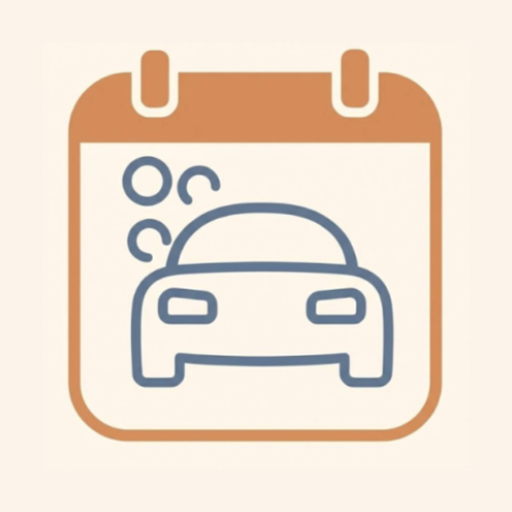
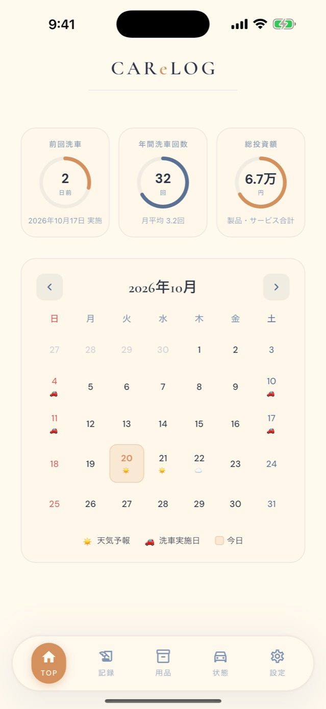
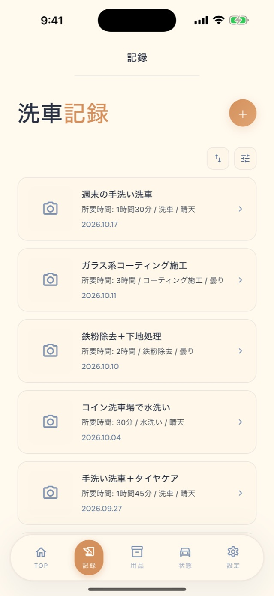
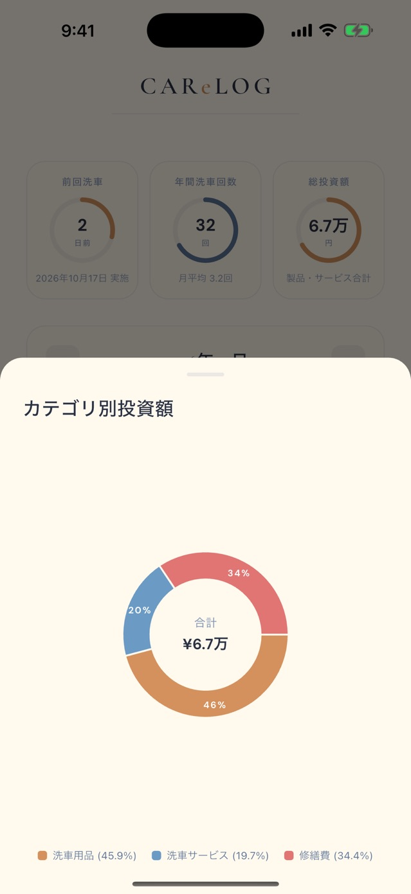

CAReLOG洗車・メンテナンスの記録アプリ
愛車の「いつだっけ？」を、 ぜんぶ覚えておく。
洗車した日、用品の残り、キズの経過、かけたお金。CAReLOG がまとめて覚えて、次の洗車日は通知で知らせて、天気も見ながら決められます。
無料会員登録なし記録は端末の中に保存


CAReLOG洗車・メンテナンスの記録アプリ
洗車した日、用品の残り、キズの経過、かけたお金。CAReLOG がまとめて覚えて、次の洗車日は通知で知らせて、天気も見ながら決められます。
無料会員登録なし記録は端末の中に保存

A.
洗ったら、記録をひとつ。あとは CAReLOG が経過日数を数えて、決めた周期が近づくと3日前・前日・当日の朝9時に通知でお知らせします。

A.天気予報を確認しています…
洗った翌日に雨、はもう避けたい。ホームのカレンダーには、洗車した日と3日分の天気予報が並びます。予定日と空模様を見比べて、洗う日を決められます。
このカレンダーは、Q1 で決めた前回の洗車日と次の予定日に連動しています。
A.
洗う直前に「切れてた」は、けっこう悲しい。シャンプーやコーティング剤の残りをスライダーで記録しておけば、30%を切った用品を洗車の2日前に知らせてくれます。

どれかを30%より下げると、通知が届きます。
ボトルを上下になぞると残量が変わります
A.
飛び石、こすりキズ、水ジミ。気になる箇所を写真つきで残して、深刻度と対応状況を「対応予定 → 対応中 → 完了」と更新していけます。修理にかかった費用も記録できます。

A.
用品の価格、洗車サービスの料金、修理代。記録した金額は自動で集計されて、カテゴリ別の円グラフで見られます。知ると、ちょっと誇らしい。たまに、ちょっとびっくり。

金額はイメージです。アプリでは、あなたが記録した金額から集計します。
洗車・コーティング施工・鉄粉除去・ワックス・水洗い・その他。並べ替えや絞り込みもできます。
月ごとのグラフで、今年どれだけ手をかけたかをふり返れます。
自分の車も家族の車も。車両ごとに記録を分けて管理できます。
洗車の仕上がり、用品、キズの様子。あとから見返すと案外おもしろい。
メールアドレスもログインも不要。記録はスマホの中にだけ保存されます。
機種変更にそなえて保存・復元できます。使うかどうかは自由です。
前回いつ洗ったっけ……？
ダウンロードは無料。会員登録なしで、すぐ記録をはじめられます。